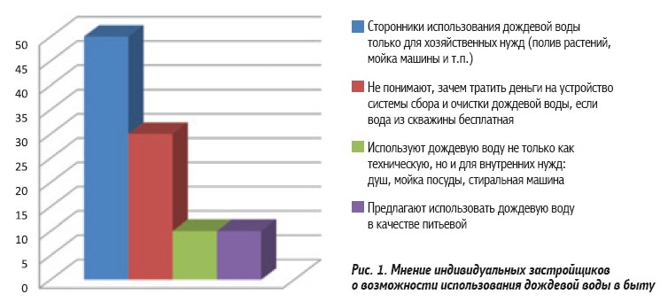
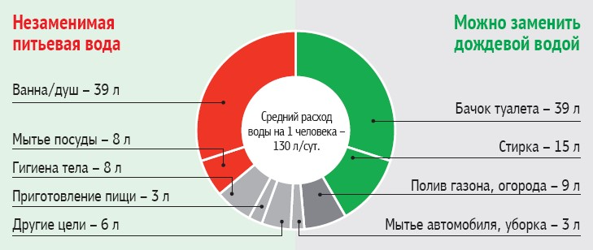

Вода с неба: использовать или отводить?
Дождевая вода, которая собирается с крыши и стекает по водостоку, многими владельцами частных домов воспринимается как головная боль. Ведь чтобы участок не превратился в болото, нужно продумать систему водоотведения, способную справиться даже с ливнем. Предлагаем взглянуть на дождевую воду как на полезный ресурс.
Тема возможности использования дождевой воды в хозяйстве популярна на форумах в Интернете. Среди активных участников обсуждений есть и сторонники, и рьяные противники подобной практики (рис. 1). Чтобы внести ясность, давайте рассмотрим позитивные и негативные моменты, связанные с использованием дождевой воды в быту.
Сначала обратим внимание на категорию застройщиков (~30%), у которых постановка вопроса о применении дождевых стоков вызывает негодование. Действительно, если вода из скважины (после ее обустройства, конечно же) достается нам бесплатно, может быть, вопрос использования дождя неактуален? Разберемся.

Вода – это бесплатно?
Жильцы многоквартирных домов платят за каждый кубометр и понимают цену воды. Владельцы частных домов тратятся только на этапе устройства системы водоснабжения, после чего пользуются водным ресурсом бесплатно, независимо от объемов. Размышления на тему частичной замены питьевой воды на лдождевую у них вызывают негодование. Зачем, если вода – это бесплатно? Обратимся к опыту других стран (рис. 2). Ситуация с водными ресурсами в каждой стране индивидуальна. Их объем и определяет стоимость и условия предоставления пользования водой гражданам. По данным консалтинговой компании NUS, вода в Германии дороже всего в мире: немцы платят €1,9/м?, что в 4 раза больше, чем в США, и в 2 раза больше, чем в Австралии. По этой причине Германия уже в 1990-х гг. начала устанавливать системы сбора дождевой воды. Сейчас в стране ~1,5 млн жилых и коммерческих зданий используют дождевую воду. Так, знаменитая пивоварня Neumarkter Lammsbrau варит органическое пиво на дождевой воде – и была за это удостоена европейской премии в области экологии EMAS Awards.

Несколько лет назад в Германии введен налог, который многие считают абсурдным, для землевладельцев, с чьих участков дождевая вода стекает на улицу и затем попадает в городской канал. Для каждого владения сумму сбора рассчитывают индивидуально, и слишком дождливая погода может утяжелить коммунальный счет больше чем на €100.
Аналогичные налоги «на дождь» действуют в Польше и Литве (Клайпеда), что не может не побуждать бережливых граждан устанавливать системы сбора дождевой воды.
Во Франции функционирует Национальное общество сбора дождевой воды. В 2006 г. был принят закон о воде и водной среде, стимулирующий сбор и использование дождевой воды. Согласно закону жители, использующие дождевую воду вне помещения (мытье автомобиля, полив сада), получали налоговый кредит в размере 25%. Внутри зданий пользоваться ей было запрещено по санитарным соображениям. В 2008 г. в закон внесли поправки и разрешили использовать дождевые стоки для мытья полов и туалетов. При этом крыша, с которой идет сбор воды, должна быть оборудована водостоками и собрана из материалов, не содержащих асбестоцемент или свинец. Требования предъявляются и к оборудованию для сбора воды. Оно должно быть разработано и изготовлено в соответствии с высокими стандартами качества. Вероятность попадания дождевой воды в питьевую должна быть исключена, для чего устанавливаются 2 независимые друг от друга системы водоснабжения в доме.
Краны и трубы, по которым идет дождевая вода, должны быть отмечены знаками, указывающими, что эту воду пить нельзя. Кроме того, некоторые краны можно открыть лишь специальным ключом. Для разграничения типов воды допускается использование пищевых красителей.
Впрочем, использовать дождевую воду в быту домовладельцев мотивируют и установленные в домах счетчики (в т.ч. и в частных). Владельцы частных домов в Финляндии могут подключиться к городской системе водоснабжения или потреблять воду из собственной скважины или близлежащего озера. В последнем случае вода финнам достается бесплатно. Потребители платят только за бурение скважины (€15 тыс.) и обеспечение работы канализации (установка системы – €10 тыс., вызов ассенизатора для очистки канализационного бака – €70). Именно финны, владельцы частных домов, чаще применяют водосберегательные системы: повторное использование воды после грубой ее очистки (в туалете) или осуществление сбора дождевой воды за счет грамотной проектировки крыш.
В Канаде, где сосредоточено ~8% мировых запасов пресной воды, этот ресурс дешев, и у государства нет нужды в создании «драконовских» законов для ограничения объемов потребления воды. Тем не менее ~60% хозяев частных домов установили индивидуальные счетчики воды. Хотя никаких лимитов и повышенных тарифов на «сверхпотребление» воды в Канаде нет.
Из вышесказанного можно сделать выводы о том, что на Западе достаточно высока экологическая сознательность граждан, а государство для стимулирования экономии воды использует метод «кнута и пряника».
Белорусы похвастаться высоким уровнем экологической сознательности не могут (рис. 1). Частный застройщик в нашей стране не может ощутить выгоду (в рублях) от сбора и использования дождевой воды в полной мере, т.к. вода ему достается бесплатно. Но чистая вода – это ценность, естественных запасов которой может не хватить на следующие поколения.
Если не касаться экологической и финансовой составляющей, использование дождевой воды рационально, когда:
- вода из скважины слишком жесткая;
- для водоснабжения используется колодец с маленьким дебитом;
- дом стоит на болотистом участке, где от сильных дождей размывается почва.
Как использовать дождевую воду?
Сегодня нет единого мнения по вопросу возможности и необходимости использования дождевой воды в бытовых целях внутри дома (для душа), особенно в качестве питьевой. Однако большинство специалистов (химиков, производителей оборудования для сбора дождевой воды) сходится во мнении, что для хозяйственных нужд дождевая вода пригодна.
За использование дождевой воды говорит тот факт, что в ней нет извести, что выгодно отличает ее от «жесткой» водопроводной. Использование дождевой воды позволяет экономить и моющие средства, т.к. не требуются ни умягчители, ни средства против известкового налета. Некоторые производители стиральных машин рекомендуют использовать дождевую воду для обеспечения лучшего качества стирки.
Однако чаще дождевую воду используют для полива садов, огородов и других хознужд. Хранить и собирать ее можно в емкости на земле (большие бочки) или под землей. Последний вариант более рациональный, т.к. под землей температура не поднимается выше +10…15°С. В таких условиях бактерии не размножаются.
При наружном хранении воды в бочке надо подавить развитие спор и водорослей, а также бактерий. Для очистки используют разные системы – от простых сеточных фильтров до сложных многоступенчатых систем, включающих УФ-облучение, песчаные фильтры и т.д.

{kind=link}